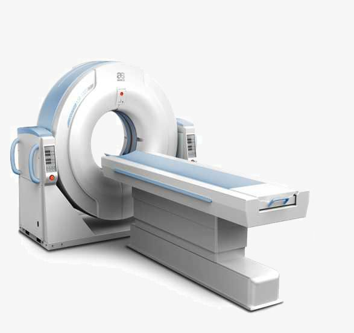
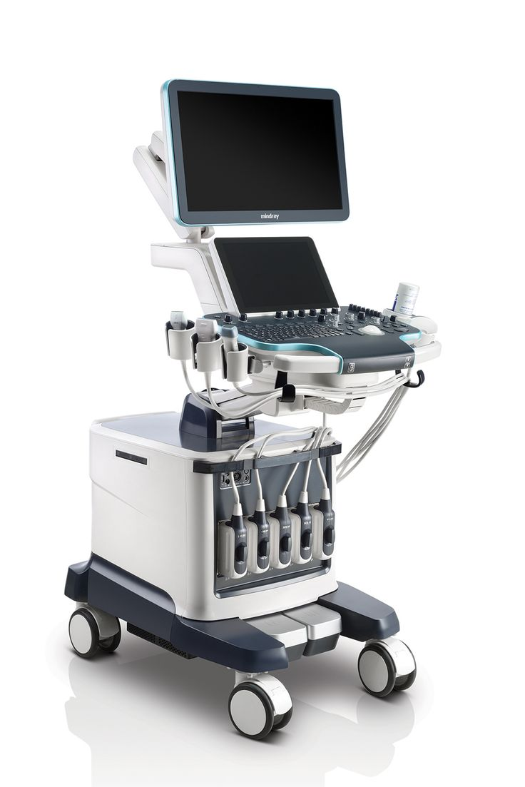
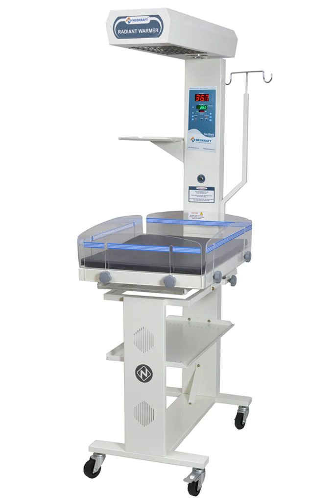
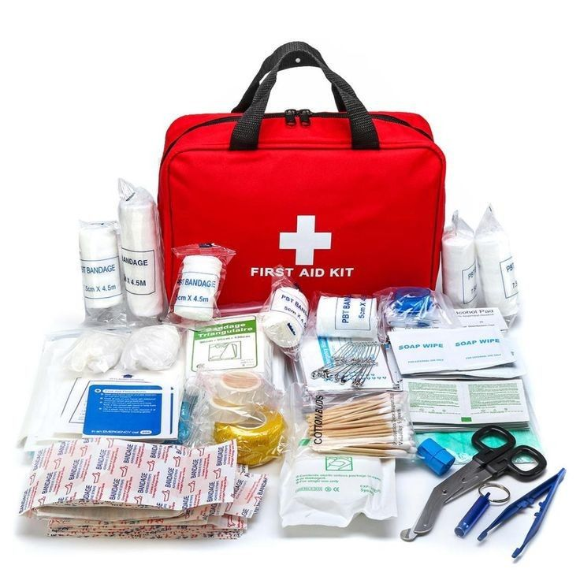
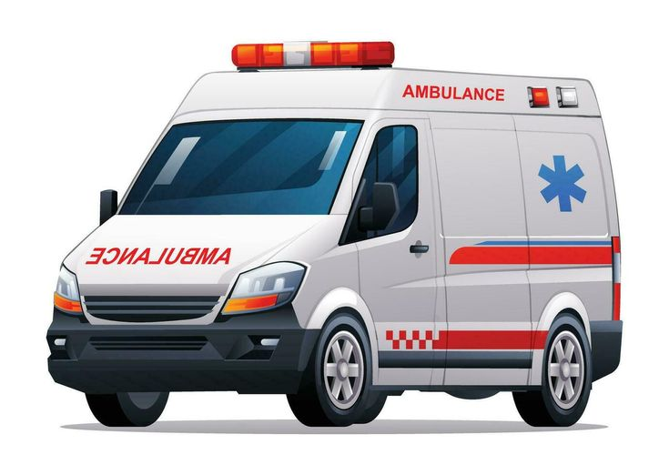

Our professional services
We provide high-quality medical care around the clock to keep you and your family healthy.
Our modern hospital combines expert doctors with the latest technology to offer fast, safe, and reliable treatment.
These are what we have to you
CT.scanner

That's a computed tomography, or CT, scanner. It uses X-rays to create detailed cross-sectional images of the inside of the body.
Ct_based ultrasound

That machine is a cart-based ultrasound system, which is used to create images of the inside of the body using high-frequency sound waves.
Infant radiant warmer

That equipment is an infant radiant warmer, which is used in neonatal care to provide a stable, warm environment for newborns.
Full first-aid services

We have full first-aid equipments like bandage,Painkillers....
Ambulance

We also have an Ambulance working 24hrs/7 on your Emergences....